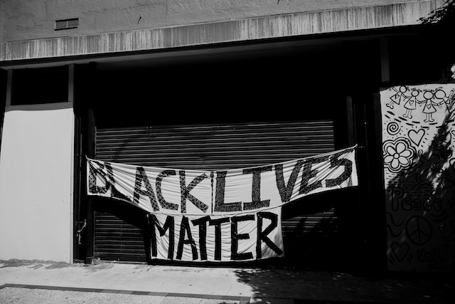

Redução das Desigualdades
A educação gera tolerância. A tolerância salva vidas. Informe-se sobre os Direitos Humanos.
Saiba mais
Sobre o ODS 10
O décimo Objetivo de Desenvolvimento Sustentável (ODS 10) das Nações Unidas visa a redução das desigualdades socioeconômicas entre as nações e, dentro delas, combater discriminações de todos os tipos.
O ODS 10 promove a inclusão social, econômica e política de todos, independentemente da idade, gênero, deficiência, raça, etnia, origem, religião, condição econômica ou outra situação.
Além disso, tem o objetivo de garantir a igualdade de oportunidades e reduzir as desigualdades, em particular por meio da eliminação de leis, políticas e práticas discriminatórias, e da promoção de legislação, políticas e ações adequadas a este respeito.
Causas sociais
Vidas Negras
Movimento antirracismo que surgiu nas redes sociais em meados de 2014, nos Estados Unidos, após a morte de Eric Garner por um policial branco, o "Black Lives Matter" ressurgiu e ganhou força em 2020, durante a pandemia do Covid-19, após a morte de George Floyd em circunstâncias parecidas.
Esse movimento tem como objetivo denunciar o racismo estrutural na sociedade e reinvindicar justiça, principalmente pelas vidas pretas que são perdidas todos os anos para o racismo.
Brasil, a campanha Vidas Negras tem como objetivo chamar atenção e sensibilizar a sociedade para os impactos do racismo na restrição da cidadania de pessoas negras, influenciando atores estratégicos na produção e apoio de ações de enfrentamento da discriminação e violência. Com isso, a iniciativa busca ampliar, junto à sociedade, gestores públicos, sistema de Justiça, setor privado e movimentos sociais, a visibilidade do problema da violência contra a juventude negra no país.

Pessoas com deficiência
Segundo o Instituto Brasileiro de Geografia e Estatística (IBGE), o Brasil tem 18,6 milhões de pessoas com deficiência, cerca de 8,9% da população.
Diariamente, a luta dessas pessoas é contra a falta de políticas públicas efetivas, a inacessibilidade, a pouca conscientização e, junto a isso, o preconceito da sociedade. Além de todos esses fatores, elas ainda tem menor acesso à educação adequada, ao trabalho e à renda.
Em 2005, a Lei nº11.133/2005 instituiu o dia 21/09 como Dia Nacional de Luta da Pessoa com Deficiência.
O resultado dessa luta foi o surgimento dos movimentos sociais de pessoas com deficiência que, como tantos outros da sociedade civil brasileira, foram decorrentes do florescimento da participação social, e se baseavam nos laços de identidade e pertencimento, em busca do reconhecimento da sua cidadania.
Junto a esses movimentos, em 2008 foi ratificada a Lei Brasileira de Inclusão de Pessoa com Deficiência (LBI), também conhecida como Estatuto da Pessoa com Deficiência, aborda itens como discriminação, atendimento prioritário, direito à reabilitação e acessibilidade. A Lei estabelece, também, que pessoas com deficiência têm autorização de saque do Fundo de Garantia de Tempo de Serviço (FGTS) para aquisição de próteses e órteses.
LGBTQIA+
A sigla LGBTQIA+ faz referência a lésbicas, gays, bissexuais, transexuais, queers, intersexuais, assexuais e as demais orientações sexuais e identidades de gênero.
A bandeira do arco-íris passou a ser utilizada na década de 1970, mas existem outras, com variações de cores e símbolos. A mais recente mudança foi a incorporação das cores da luta antirracista, da bandeira trans e da simbologia intersexo.
Na sociedade, o preconceito que ameaça a qualidade de vida, a saúde mental e a integridade física das pessoas LGBTQIA+ ainda existe não apenas no Brasil, mas em vários locais do mundo.
Com isso, o movimento de origem política e social defende a diversidade e busca mais representatividade e direitos para essa população.
Essa luta promove a igualdade de gênero, a criminalização a todo e qualquer tipo de violência contra as pessoas LGBTQIA+, o fim da representação estereotipada desse grupo nas mídias, a conquista de direitos como o casamento e a adoção, que são, muitas vezes, negadas aos casais homossexuais, entre outros.
Sobre mim
Thaís F. Lopes
Brasileira, natural de Guararema-SP, sou uma mulher de 32 anos que está iniciando carreira na área de tecnologia.
Atualmente residindo no município de Jacareí-SP, cursando Bacharelado em Tecnologia da Informação na UNIVESP.